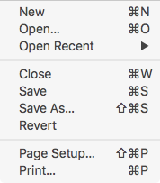

Save a Tidy’d Document
-
Use the Save or Save As… menu item in the File menu to save your document using the Tidy’d text. 
-
If an alert dialog appears on screen, take an appropriate action per the discussion, below.
-
Upon successfully saving the document, the Tidy’d text will replace the original, untidy text in the Source HTML editor.
Discussion
Saving your document will replace the original document, and so, depending on the behavior set in Preferences, you may have to use the Save As… menu item in the File menu to save your document. If you attempt to save a document and see this message:

Or this message:

…then you can be sure that Balthisar Tidy is set to ensure against any possible data loss as a result of its work.
Data loss is very unlikely, but as Tidy is very, very strict it’s possible that it will remove content that it thinks is garbage. For this reason it’s always important to review the Tidy Messages table.